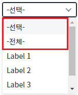
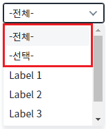
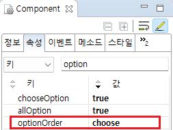

SelectBox의 'optionOrder' 속성을 사용하여 '전체' 항목과 '선택' 항목의 순서를 설정한 예제입니다.
'optionOrder' 속성의 기본 설정은 '선택' 항목 다음에 '전체' 항목이 표시되는 것입니다.
'전체' 항목은 'allOption' 속성을 'true'로 설정하면 표시되고, '선택' 항목은 'chooseOption' 속성을 'true'로 설정하면 표시됩니다.
'선택' 항목을 '전체' 항목보다 위에 표시하기
'전체' 항목을 '선택' 항목보다 위에 표시하기
예제 영역 "(기본 설정) '선택' 항목을 '전체' 항목보다 위에 표시하기"에서 테스트합니다.1
항목을 확인합니다.
항목이 '-선택-', '-전체-', 'Label 1', 'Label 2', 'Label 3' 순으로 표시됩니다.
Image 1.브라우저(Chrome) 실행 예시

예제 영역 ''전체' 항목이 '선택' 항목보다 위에 표시"에서 테스트합니다.1
항목을 확인합니다.
항목이 '-전체-', '-선택-', 'Label 1', 'Label 2', 'Label 3' 순으로 표시됩니다.
Image 2.브라우저(Chrome) 실행 예시

1
SelectBox의 속성을 설정합니다.
[필수] optionOrder="옵션 값"
[default: choose, all] 선택 항목과 전체 항목을 동시에 사용하는 경우 표시 순서를 설정합니다.
(옵션 설명)
choose: [default] 선택 항목 다음에 전체 항목이 표시됩니다.
all: 전체 항목 다음에 선택 항목이 표시됩니다.
[필수] chooseOption="true"
선택 항목을 표시하기 위한 설정입니다.
[default:false,true] 선택 항목의 표시 여부를 설정합니다.
[필수] allOption="true"
전체 항목을 표시하기 위한 설정입니다.
[default:false,true] 전체 항목의 표시 여부를 설정합니다.
Image 3.웹스퀘어 스튜디오의 Component View - 속성 설정 예시

Example 1.Source
<xf:select1 optionOrder="choose" allOption="true" chooseOption="true"> <!-- 중략 --> </xf:select1>
optionOrder
chooseOption
allOption